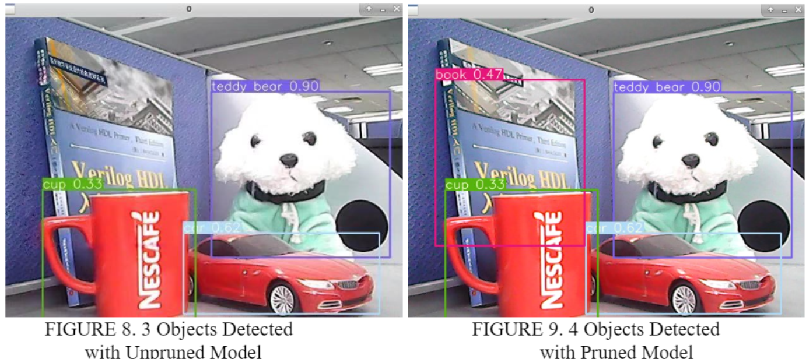
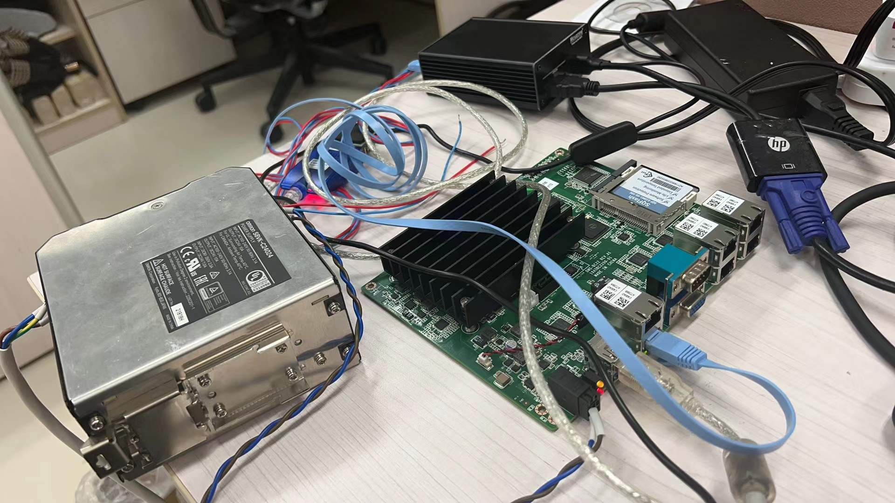

- Deep Learning Model Compression
- In this paper, we experimented with using two tricks for model compression: Pruning and Quantization. By utilizing these methods, we got a remarkable improvement in model simplification while retaining a relatively close accuracy.
- [Paper] [Code]